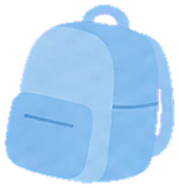

養成講座ガイド
キャリアコンサルタントは


この
独学で
テキストだけで


答え
結論：キャリアコンサルタントは、

サニー先生独学だけでは
受験する
「養成講習は
更新日: 2026年10月15日 情報確認日: 2026年9月24日
広告このページに広告(紹介リンク)はありません くわしく
- 広告・PR
- なし(この
ページに 紹介リンクは 含みません。 右下の 説明会の ボタンは、 比較表の 6校の 申込み先への リンクです) - 学校からの
無償提供 - 受けていません
- 情報の
根拠 - キャリア
コンサルティング協議会・厚生労働省の 公開情報

くわしく
結論:コンサルタントは
国家資格キャリア
「テキストを
モヤン本、

サニー先生その本は、
モヤン本は、

くわしく
受験資格と
試験実施機関が
出典:
3つ目の

くわしく
「実務経験3年」
「人事の
- 支援の
対象が 労働者 である こと (学校卒業後の 就職希望者を 含む) - 相談内容が
職業の 選択・職業生活設計・職業能力開発 に 関する ものである こと - 一対
一 で 行われる 相談である こと (少人数の グループワークを 含む)
出典:
たとえば、
サニー先生見る
モヤン迷ったら、

くわしく
キャリアコンサルタント試験の

くわしく
養成講習を
厚生労働省が
出典: 厚生労働省
受験する
実技は、
モヤン学科の
サニー先生実技は

くわしく
わたしが
わたしは
学科は、
学科は、
やり方は、過去問を
論述は、
論述と
論述は、
面接は、
面接は
時間は、
修了後に、
学校の
Zoomの
養成講習だけでは
養成講習だけで
自分が
モヤン面接の
サニー先生2人いれば

ちゃん体験養成講習だけで

くわしく
キャリアコンサルタント資格の
つい養成講習の
出典:
試験に
養成講習の
サニー先生試験に
モヤン合格して、

よくある
Q独学だけで
できません。
Q人事の
相手が
Q試験の
できます。
Q養成講習を
第31回試験の
Q資格を
受験手数料(学科8,900円・実技29,900円)、